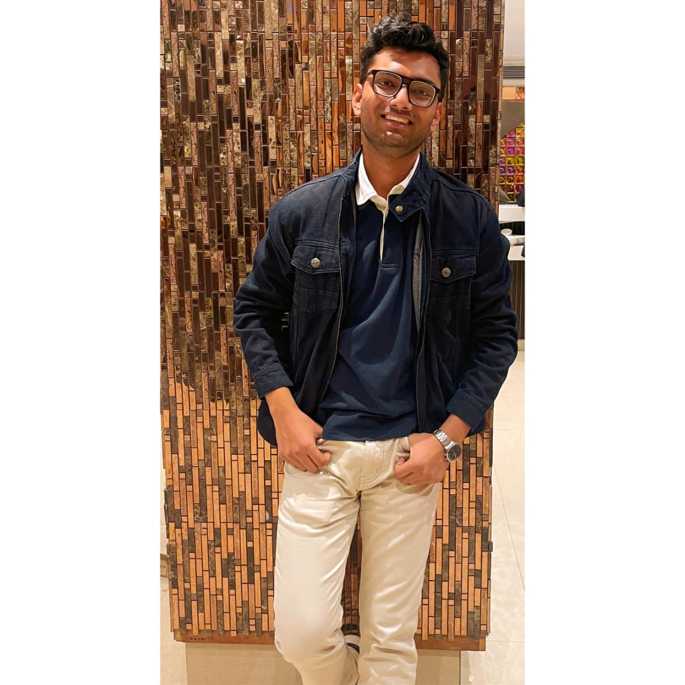

Shivank Tomar

Linkedin
GitHub
Passionate and results-driven B.Tech student at Netaji Subhas University
of Technology, specializing in Information Technology. Dedicated to
mastering software engineering with a strong foundation in programming
languages and innovative problem-solving. Eager to contribute my skills
and collaborate on cutting-edge projects. Open to new opportunities and
always ready for a challenge. Let's connect and explore possibilities
together!
Education
Netaji Subhas University of Technology (NSUT) Delhi, India 2021 - 2025
Information Technology | CGPA: 7.96
DAV Public School East OF Loni Road Delhi
- CBSE (Class XII), 96.6% 2020 - 2021
- (Class X), 92.4%: 2014 - 2015
Skills
C++ | C | Java | Python | HTML | CSS | MySQL|Computer Networking|
Extracurricular Achievements
-
Traveling: Explored diverse cultures and gained a global perspective.
-
Public Speaking and Group Leading: Developed effective communication and
leadership skills.
- Writing: Demonstrated creativity and expression through writing.
Contact